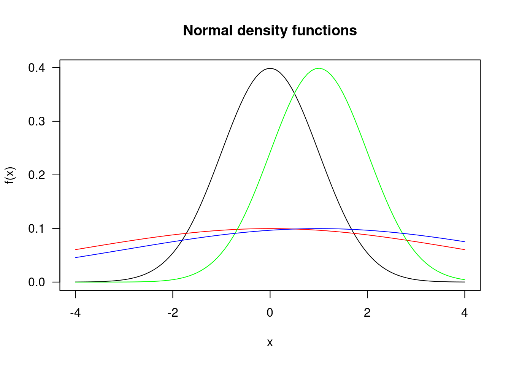

NonParametric Stats
2022-01-19
1 Hypothesis Testing
\[\begin{equation} X \sim N(\mu,\sigma^2), f(x) = \frac{1}{\sqrt{2\pi\sigma}}e-\frac{(x-\mu)^2}{2\sigma^2}, F(x) = \int_{-\infty}^{x} \frac{1}{\sqrt{2\pi\sigma}}e\frac{-(t-\mu)^2}{2\sigma^2}dt \end{equation}\]
Normal Distributions
a =0
b=1
lx=100
x=seq(-4,4,length=lx)
fx = dnorm(x,a,b)
fx## [1] 0.0001338302 0.0001842953 0.0002521381 0.0003427099 0.0004627846
## [6] 0.0006208623 0.0008275148 0.0010957722 0.0014415473 0.0018840898
## [11] 0.0024464615 0.0031560163 0.0040448664 0.0051503080 0.0065151783
## [16] 0.0081881065 0.0102236211 0.0126820683 0.0156292995 0.0191360817
## [21] 0.0232771927 0.0281301641 0.0337736510 0.0402854146 0.0477399263
## [26] 0.0562056185 0.0657418315 0.0763955298 0.0881978860 0.1011608535
## [31] 0.1152738702 0.1305008512 0.1467776382 0.1640100747 0.1820728700
## [36] 0.2008093962 0.2200325354 0.2395266587 0.2590507715 0.2783428081
## [41] 0.2971250031 0.3151102096 0.3320089800 0.3475371752 0.3614238299
## [46] 0.3734189738 0.3833010942 0.3908839312 0.3960223134 0.3986167793
## [51] 0.3986167793 0.3960223134 0.3908839312 0.3833010942 0.3734189738
## [56] 0.3614238299 0.3475371752 0.3320089800 0.3151102096 0.2971250031
## [61] 0.2783428081 0.2590507715 0.2395266587 0.2200325354 0.2008093962
## [66] 0.1820728700 0.1640100747 0.1467776382 0.1305008512 0.1152738702
## [71] 0.1011608535 0.0881978860 0.0763955298 0.0657418315 0.0562056185
## [76] 0.0477399263 0.0402854146 0.0337736510 0.0281301641 0.0232771927
## [81] 0.0191360817 0.0156292995 0.0126820683 0.0102236211 0.0081881065
## [86] 0.0065151783 0.0051503080 0.0040448664 0.0031560163 0.0024464615
## [91] 0.0018840898 0.0014415473 0.0010957722 0.0008275148 0.0006208623
## [96] 0.0004627846 0.0003427099 0.0002521381 0.0001842953 0.0001338302bx = 1
dbx=dnorm(bx,a,b)
dbx## [1] 0.2419707plot(x,fx, type = "l", xlab = "x", ylab = "f(x)", main = "Normal density functions",
las= 1)
dist_2 <- dnorm(x, mean=0, sd=4)
dist_3 <- dnorm(x, mean=1, sd=1)
dist_4 <- dnorm(x, mean=1, sd =4)
lines(x, dist_2, type = "l", col = "red")
lines(x, dist_3, type = "l", col = "green")
lines(x, dist_4, type = "l", col = "blue")
\[\begin{equation} F(x) = P(X\le x) = 1 - P(X>x) \end{equation}\]
when lower.tail == TRUE, probabiltiies are p[X<x]
## density under the curve
dnorm(x=0, mean=0, sd=1)
dnorm(0,0,2)
dnorm(0,1,1)
dnorm(0,1,2)
## probability
pnorm(0,0,1)
pnorm(0,0,2)
pnorm(0,1,1)
pnorm(0,1,2)
a=0
b=1
lx=100
x=seq(-4,4,length=lx)
fx=dnorm(x,a,b)
bx=1
dbx=dnorm(bx,a,b)
plot(x,fx,type="l",lwd=2,xlab="x",ylab="Density",main="N(0,1)",las=1,xaxt="n")
segments(bx,0,bx,dbx,lty=3)
sx=seq(-4,bx,length=lx)
polygon(c(sx,rev(sx)),c(dnorm(sx,a,b),rep(0,lx)),density=2,border=NA,lty=3)
text(-0.5,0.1,expression(P(X<=z[1-alpha])==1-alpha))
abline(h=0,lty=3)
axis(1,at=bx,label=expression(z[1-alpha]))
sx=seq(bx,4,length=lx)
polygon(c(sx,rev(sx)),c(dnorm(sx,a,b),rep(0,lx)),density=3,border=NA,
angle=-45,lty=3)
text(2.5,0.1,expression(P(X>z[1-alpha])==alpha))
Power
Probability of rejecting \(H_0\) when it is true is type I error (falsely reject), aka significance of the test aka \(\alpha\). Probability of not reject H_0 when it is false is a type II error, \(\beta\). Power of test is \(1-\beta\).
Confidence Intervals
Confidence set with a confidence coefficient of \(1-\alpha\) is the set.
Parametric Methods
Parametric distributions qith populations
\[\begin{equation} N(\mu, \sigma^2),binomial(n,p) \end{equation}\]
n=30
x=rnorm(n,mean=0,sd=1)
sort(x)## [1] -2.25340029 -2.20239154 -1.45281804 -1.30620453 -1.20858266 -1.14183048
## [7] -1.10232254 -1.05843893 -1.05544744 -0.99952698 -0.78925414 -0.46099935
## [13] -0.43481601 -0.38231750 -0.37322107 -0.25838970 -0.12085997 -0.03905129
## [19] 0.11258261 0.23559285 0.30798861 0.31111783 0.43236571 0.48475379
## [25] 0.54605964 0.68644345 0.77180498 0.95801685 1.47873812 2.56004969xbar=mean(x)
sdx=sd(x)One sided H_0
\[\begin{equation} H_0 : \mu = \mu_0 vs. H_1: \mu > Mu_0\\ T = \frac{\sqrt(x-\mu_0)}{\sigma} \sim \text{t distribution with n-1 degrees of freedom} \\ \text{Reject null if t} > t_{n-1,1-\alpha} \\ \text{Type I error}: \alpha = P_{\mu_o}(T>t_{n-1,1-\alpha}) \\ \text{Acceptance region} : T \le t_{n-1,1-\alpha}\\ 1- \alpha = P_{\mu_0}(\frac{\sqrt{n}(\bar{X}-\mu_0)}{\hat\sigma}) \le t_{n-1,1-\alpha}\\ = P_{\mu_0}(\bar{X} - t_{n-1,1-\alpha}\frac{\hat\sigma}{\sqrt{n}} \le \mu_0) \end{equation}\]
Below, the critical values for alpha of 0.05 is 1.699. Given a sample mean of 1, and our critical test statistic of -6.07, probability in the lower tail is 0.99, so fail to accept the alternative that the true mean is greater than 1.
alpha = 0.05
tq = qt(1-alpha, n-1)
c(qt(1-alpha, n-1), qt(alpha,n-1, lower.tail = F))## [1] 1.699127 1.699127mu0=1
tstat=sqrt(n)*(xbar-mu0)/sdx;c(tstat,tq,pt(tstat,n-1,lower.tail=F))## [1] -6.5566142 1.6991270 0.9999998xbar-tq*sdx/sqrt(n)## [1] -0.5846096t.test(x,alternative="greater",mu=mu0)##
## One Sample t-test
##
## data: x
## t = -6.5566, df = 29, p-value = 1
## alternative hypothesis: true mean is greater than 1
## 95 percent confidence interval:
## -0.5846096 Inf
## sample estimates:
## mean of x
## -0.2584786Testing against sample mean of -1, then the tstat is 5.45, and probability in lower tail is <.05, so accept the alternative that true mean is greater than -1.
mu0=-1; tstat=sqrt(n)*(xbar-mu0)/sdx
c(tstat,tq,pt(tstat,n-1, lower.tail=F))## [1] 3.8632914743 1.6991270265 0.0002895716xbar-tq*sdx/sqrt(n)## [1] -0.5846096t.test(x,alternative="greater",mu=mu0)##
## One Sample t-test
##
## data: x
## t = 3.8633, df = 29, p-value = 0.0002896
## alternative hypothesis: true mean is greater than -1
## 95 percent confidence interval:
## -0.5846096 Inf
## sample estimates:
## mean of x
## -0.2584786Power
\[\begin{equation} \text{Reject null if }\bar{X} > \mu_0 + t_{n-1,1-\alpha}\frac{\hat\sigma}{\sqrt{n}}\\ \text{Type II error: do not reject null when it is false} \\ \beta = P_{H_1}\text{do not reject null}\\ \text{Power: the probability of rejecting null when alt is true}\\ 1-\beta = P_{\mu}(\bar{X} > \mu_0 + t_{n-1,1-\alpha}\frac{\hat\sigma}{\sqrt{n}}) \\ = P_{\mu}(\frac{\sqrt{n}(X-\mu)}{\hat\sigma} > \frac{\sqrt{n}(\mu_0 -\mu)}{\hat\sigma} + t_{n-1,1-\alpha} \end{equation}\]
alpha = 0.05
tq = qt(1-alpha, n-1)
mu0=1
mu=1.5
tv = sqrt(n)*(mu0-mu)/sdx+tq
pt(tv,n-1,lower.tail=F)## [1] 0.8137597power.t.test(n,delta = abs(mu0-mu), sd=sdx,
type = c("one.sample"), alternative = "one.sided")##
## One-sample t test power calculation
##
## n = 30
## delta = 0.5
## sd = 1.0513
## sig.level = 0.05
## power = 0.8155605
## alternative = one.sided